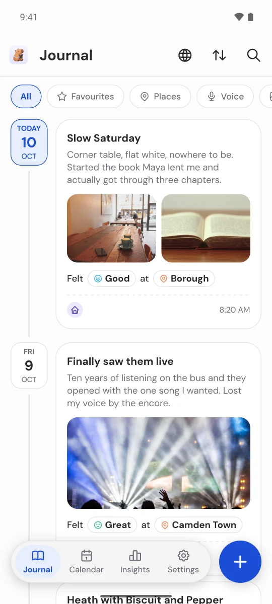
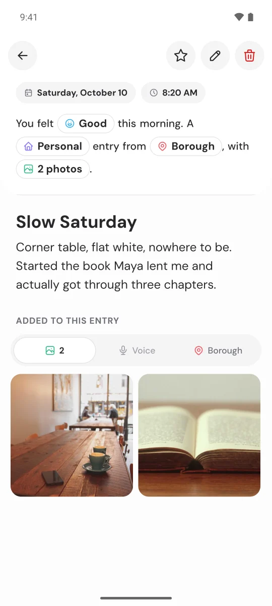
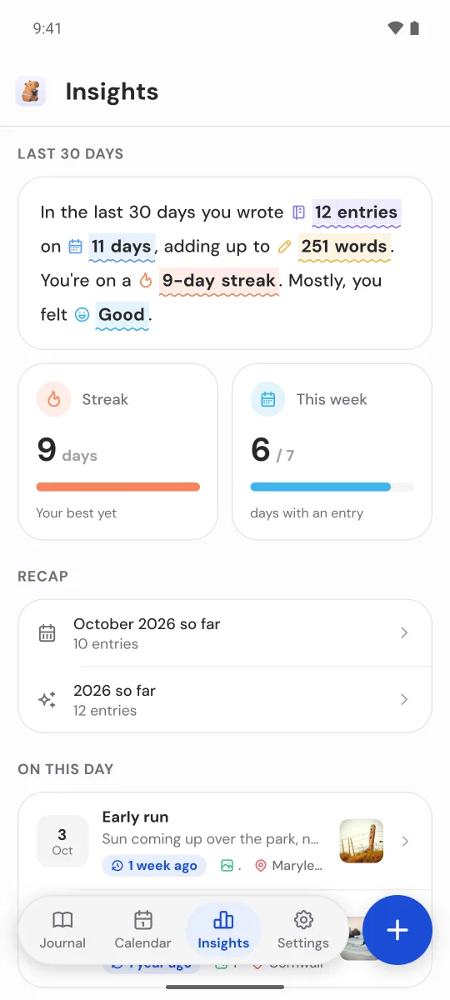
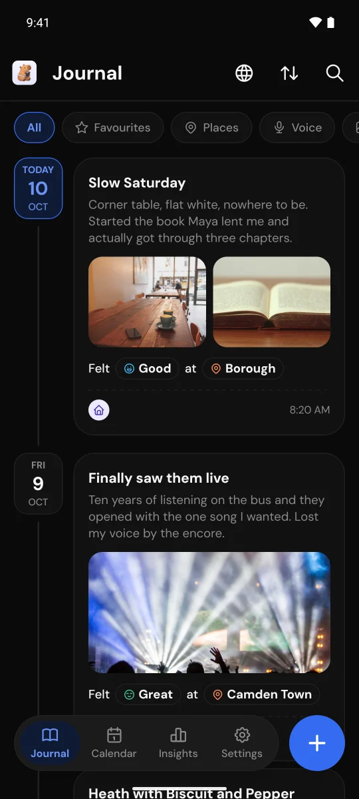

Your day, in a few lines.
Write what happened, tag how you felt and where you were, add a photo or a voice note. Everything stays on your phone.
How are you feeling now?
Tap a mood for today. Pulse keeps track of your week, your streak and how you’ve mostly been, the way the Insights tab does.
Last 7 days
Insights
Watch your streak grow.
Every day you write shows up on the calendar, with its photo or how you felt. Tap a day to read it back.
Made for a few lines a day.
A daily prompt
A new question each day for when you don't know where to start.
Photos and voice notes
Add photos with the photo picker, or record a voice note in a tap.
Places and maps
Tag where you were. Each entry gets a small map of the spot.
On this day
What you wrote a month or a year ago, today.
Monthly and yearly recaps
What you wrote, where you went and how you felt.
Your places on a globe
Every place you've written from, on a spinning 3D globe.
Gentle reminders
A daily nudge at the time you choose, and On this day memories.
Widgets and shortcutsAndroid
Your streak, today's prompt, a memory and a one-tap mood check-in.
Backup and restore
Export everything to one file. Import it again on a new phone.
Calm, clear, and quick to write in.




Your journal stays on your phone.
No account
Open it and write. There’s nothing to sign up for.
No ads, no tracking
No analytics, no ad networks. Nothing you write reaches us.
Yours to take
Export everything, photos and voice notes included, to one backup file.
A few lines a day. Free on Android, with no account and no ads.
Get it on Google Play